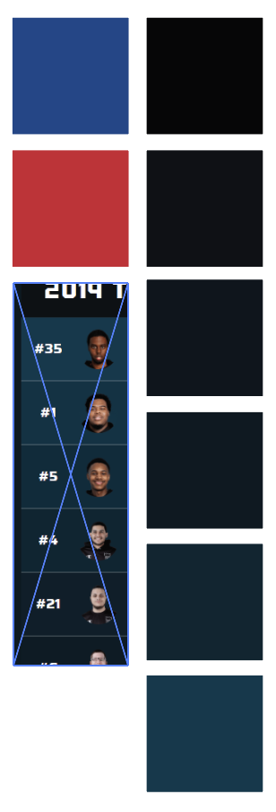
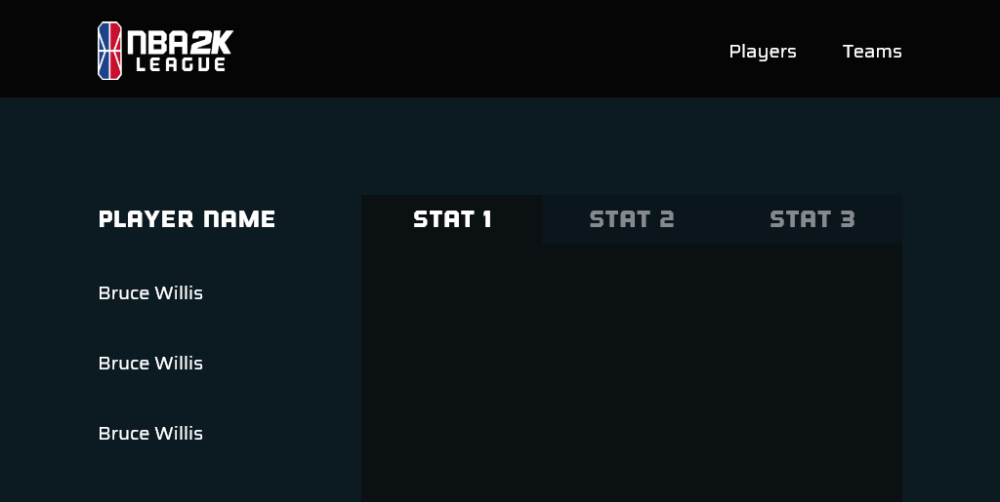
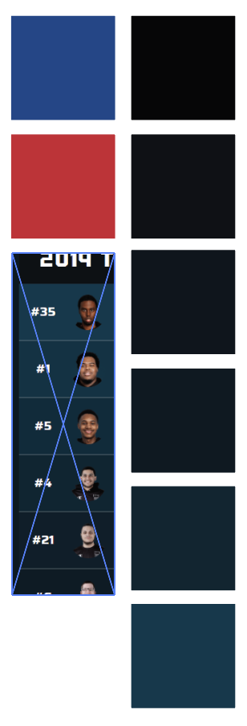
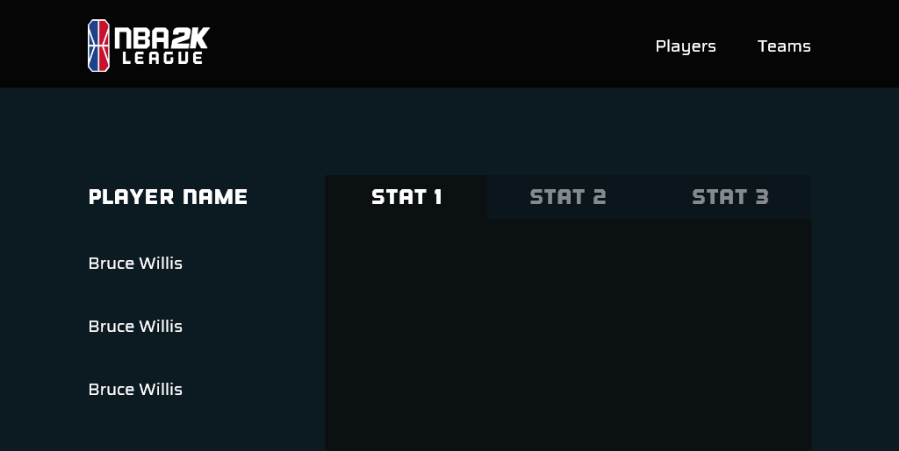

NBA 2k Season 2 Team Standings
Site layout for easy player ranking and analysis of the NBA 2K Season 2 teams
Overview
This project displays the ranking and statistics of the E-Gaming NBA 2K League. The project provides information in a neat and easily readable format. The project won the award for best UI/UX at SacHacks in February 2020. The project was coded in 24 Hours and we were given a prompt which can be found here. We chose the prompt to analyze data for the Sacramento Kings (prompt 1).
I worked on the front end and visual development. Photoshopped photos and set up some photos. Created mockups and set sizing/spacing. Ensured visual consistency and adopted branding of 2K site. Developed the CSS and some of the JavaScript (using vanilla and JQuery).
Prompt
We were given prompts as tracks to follow for SacHacks. Provided stats and our research, we were to provide any or all of the following:
- Create a player model that ranks all league 126 players in terms of their skill, contribution towards winning, etc.
- Looking at Kings Guard Gaming specifically, what were our team’s biggest strengths/weaknesses? How did our team and players rank among the league?
- Any other unique findings from looking at data and information?
Approach and Research
Coming up with an idea was difficult, and we took a while choosing which track to proceed with. After determining our route, we started brainstorming the back-end and front-end approaches. I started developing visuals based on the official NBA 2K site, pulling the dark blues from the webpage, and bold red and blue from the NBA logo.
 



Development
I started mocking up front-end using Adobe XD. After that was completed I translated the mockup into code. While my team worked on the back-end, I ensured the coded site was fluid to the user. Below are coded version of the incompleted players page and finished team page.
Rankings are based on the Player Efficiency Rating calculated by a back-end Python formula, which roughly determines how well or poorly each player/team performed in the NBA 2k Second Season. From there, we were able to highlight players who did not perform as successfully. Players with red stats had less desirable scores. Both teams and players were ranked. In the future we are hoping to include statistics that show each player and team's winnings.